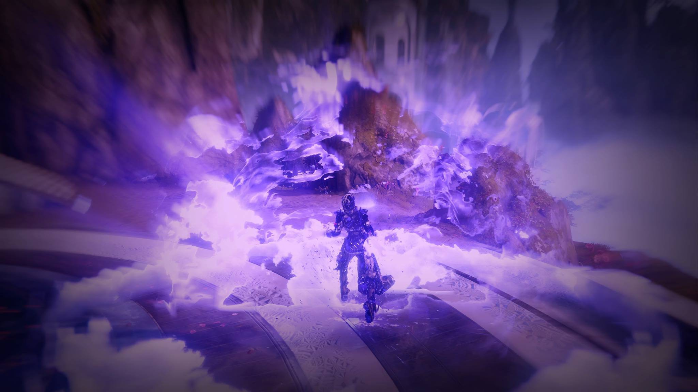
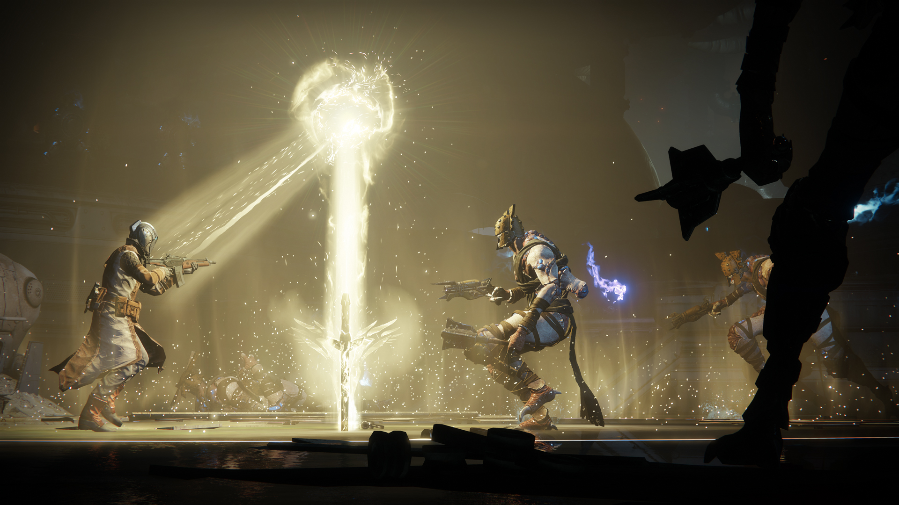

Warlock
Warlocks are the most versatile of Destiny's class triad, and sacrifice resilience and mobility for the ability to regenerate health quickly. Much like its Titan and Hunter brethren, the Warlock class is divided into three subclasses at present; each specialization offers unique abilities and alters the manner in which warlocks can use their jump, grenades, or class ability. Shared among all subclasses is the Rift class ability; this technique is further divided into Healing Rift and Empowering Rift, allowing players to either provide healing or increased weapon damage to those who stand in the rift.
In the Destiny 2 base game, Warlocks start with the Solar element subclass of Dawnblade. They gain the ability to unlock the Void element subclass, Voidwalker, at level 8 and the Arc element subclass, Stormcaller, at level 15.
Destiny 2: Forsaken gives each of the three character classes three new supers for each of their subclasses, which are tied to a brand new third subclass branch. The first of new subclass can be unlocked simply by playing through the Forsaken campaign. After the first mission is completed, enemies will drop feather-like objects caled Visions of Light. Once enough are collected, a special mission is unlocked on Io that rewards you with a Seed of Light that can be used to unlock one of the subclasses. You start out with just the super ability and unlock the melee ability and passives by dealing ability damage to enemies. The second seed of light can be obtained from completing the Tier 2 or above version of the Blind Well activity, and the third seed of light can be received by completing the first raid encounter of the Last Wish raid or giving an offering to the Oracle on the third week of the Dreaming City curse cycle.
 Voidwalker: Attunement of Fission Melee - Atomic Breach: The Voidwalker’s melee attack generates a void explosion ahead of the Warlock. Perk - Handheld Supernova: Holding the grenade button will eat the grenade and cause an explosion in the vicinity of the Warlock. Perk - Dark Matter: Void ability kills will restore ability energy and health. Super - Nova Warp: The super is Nova Warp, which lets players teleport and explode. The teleports are on one button while the explosion is controlled with another. Holding the explosion button will increase the radius. Tapping it will use less super energy but cause a much smaller explosion.
Stormcaller: Attunement of Control Melee - Ball Lightning: The Stormcaller’s melee ability fires out an orb of electricity that soon explodes, sending a lightning bolt into the ground. Perk - Ionic Traces: Killing things with arc damage occasionally leaves behind Ionic Traces. Each time the Warlock collects an Ionic Trace, they’ll regain some ability energy. Perk - Pulsewave: Collecting Ionic Traces with less than full health will grant a speed boost to you and your allies. Super - Chaos Reach: The super is Chaos Reach, which sends out a beam of damaging energy. It’s possible to shut off the beam before using your entire super bar. This will conserve some energy, allowing you to use it again after you fill it back up.
 Dawnblade: Attunement of Grace Melee - Guiding Flame: The Dawnblade’s melee ability burns enemies and buffs allies. This is presumably a similar buff to standing in an Empowering Rift. Perk - Divine Protection: Holding the grenade for an extended time turns it into a Blessing instead, which can be launched to heal allies and drop overshield orbs. Perk - Benevolent Dawn: Any healing or buffing abilities regenerate the Warlock’s nonsuper abilities. Super - Well of Radiance: The super is Well of Radiance, in which the Guardian sticks their sword into the ground to create a large rift that both heals and buffs allies. This buff lasts for thirty seconds.